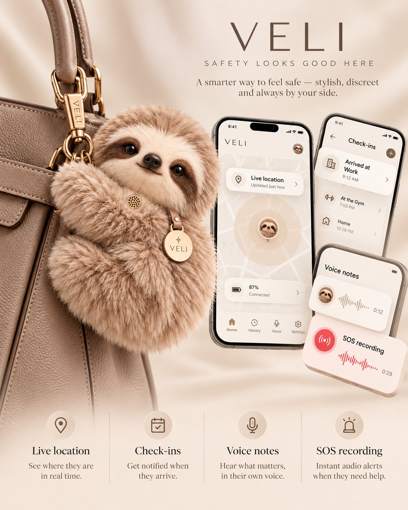

YOUR EVERYDAY AI COMPANION
VELI
More than a fashion accessory.
A beautiful AI companion that lives on the side of your bag, helps with everyday life, keeps you connected and adds a quiet layer of reassurance when you want it.
first
AI
when you choose
ONE COMPANION. MANY ROLES.
Designed for the way you actually move through life.
FASHION FIRST
It should look like it belongs there.
VELI begins as an accessory you would actually want on your bag. Soft, tactile and deliberately compact, it crouches against the side like a sloth hugging a tree rather than dangling from the front.
ALIVE WITH PERSONALITY
Its body stays put. Its attention can move.
VELI is designed to remain securely crouched against your bag while its head turns outward, helping it feel present rather than passive.

NOTIFICATIONS THAT MEAN SOMETHING
Your day, surfaced at the right moment.
VELI can bring together useful updates without turning your day into a stream of noise: reminders, check-ins, arrival confirmations, voice notes and the things you asked it to remember.
TALK WHILE YOU MOVE
Ask VELI instead of stopping to type.
Send a quick message, save a reminder, ask a question or leave a voice note while your phone stays in your hand or your bag.
FIND WHAT YOU NEED
“Where’s the nearest ATM?”
VELI is designed to turn practical questions into useful answers on the move — from the nearest cash machine or pharmacy to coffee, transport and directions.
FIND YOUR PEOPLE
Lost at a festival? Not for long.
When everyone gets separated, VELI can help you see the friends who have chosen to share their location with you and make meeting back up simple.
LIVE LOCATION
Share the journey, not your whole life.
Choose when live location starts, who can see it and when it ends. VELI is designed around intentional sharing, not permanent tracking.
A QUIET SAFETY LAYER
When the night keeps going.
Start a Walk Home journey and VELI is designed to keep your route, check-in timer and trusted people together in one calm experience.
SEE. HEAR. CAPTURE.
Context when you decide it matters.
VELI is intended to support discreet audio and visual capture when activated, giving you a simple way to record what is happening around you.
MEMORY FOR REAL LIFE
“Where did I park?” Already remembered.
VELI can remember useful context you ask it to keep — like where the car is, what you needed to pick up or the detail you did not want to forget.
TRAVEL WITH LESS FRICTION
Gate, platform, route — VELI can help you get there.
Use VELI for directions and travel guidance when you are moving through an unfamiliar airport, station or city.
VELI TO VELI
Your circle can feel closer.
Friends can connect their VELIs for easier meet-ups and optional location sharing, while trusted people can receive the updates you choose to send.
MADE TO BELONG ON YOUR BAG
Choose a VELI that feels like yours.
A palette inspired by leather goods and everyday fashion rather than novelty electronics.
THE IDEA BEHIND VELI
Useful enough to change your day.
Beautiful enough to become part of it.
VELI is not a security gadget disguised as an accessory. It is a fashion-first AI companion with everyday intelligence, connection, tracking and a safety layer built quietly into the same experience.
BE FIRST TO MEET VELI
Join the VELI waitlist.
Get launch updates, early access and first notice when reservations open.